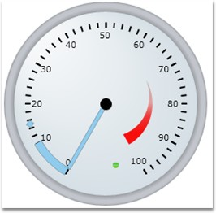
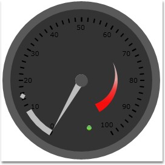
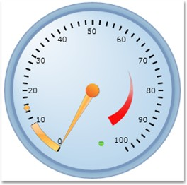
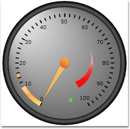
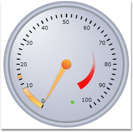
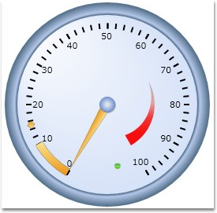
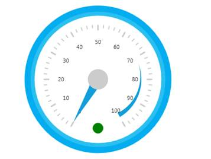

Visual Style
The appearance of the Circular gauge control can be enhanced by customizing the visual styles of the control. This can be achieved by setting the VisualStyle property to the required style.
The following are the visual styles supported by the Circular gauge control.
· Default
· Blend
· Office 2007 Silver
· Office 2007 Blue
· Office 2007 Black
· Office 2003
· Metro

Figure 50: Visual Style Default

Figure 51: Visual Style Blend

Figure 52: Visual Style Office Blue

Figure 53: Visual Style Office Black

Figure 54: Visual Style Office Silver

Figure 55: Visual Style Office 2003

Figure 56: Metro
The following code example illustrates how to set the visual style for the control.
|
[C#]
SkinManager.ApplyStyle(CircularGauge, VisualStyle.Blend); |
Figure 57: Visual Style Blend
 Visual Style without Using
Shared.Silverlight.dll
Visual Style without Using
Shared.Silverlight.dll